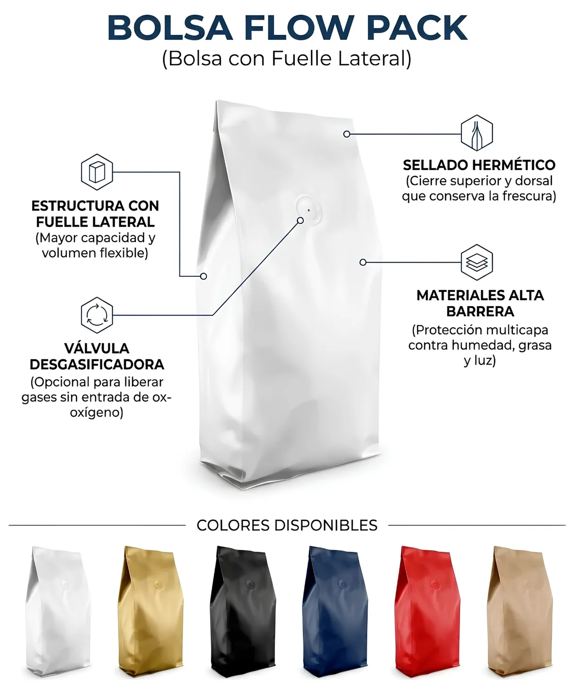
Bolsa Flow Pack
Bolsa plana con sello de aleta. La opción más económica para alto volumen.
- Tamaños250 g · 500 g
- Colores6 colores
- AditamentosVálvula opcional
Desde $1.000 COP / ud
Precio por unidad desde 100 bolsas, sin IVA.Fabricamos y vendemos empaques Flow Pack, Doy Pack y 4PRO con válvula desgasificadora opcional; la Doy Pack incluye zipper resellable. Genéricas o personalizadas con serigrafía o impresión digital, desde 100 unidades y con envío a toda Colombia.
Tenemos tres formatos: Flow Pack y Doy Pack en 250 y 500 g, y 4PRO en 250, 500 y 1000 g, desde $1.000 COP por unidad a partir de 100 bolsas. Entra a cada formato para elegir tamaño, color y válvula y ver el precio al instante. Precios por unidad desde 100 bolsas, sin IVA.

Bolsa plana con sello de aleta. La opción más económica para alto volumen.
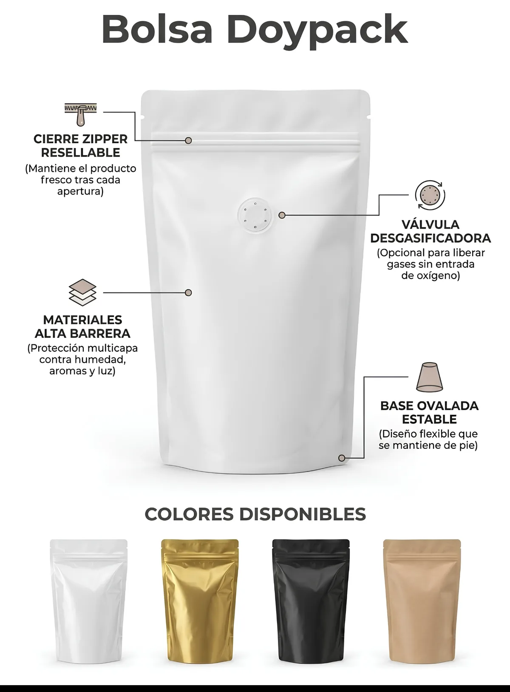
Bolsa stand-up con base que se sostiene sola en el estante. Zipper resellable incluido.
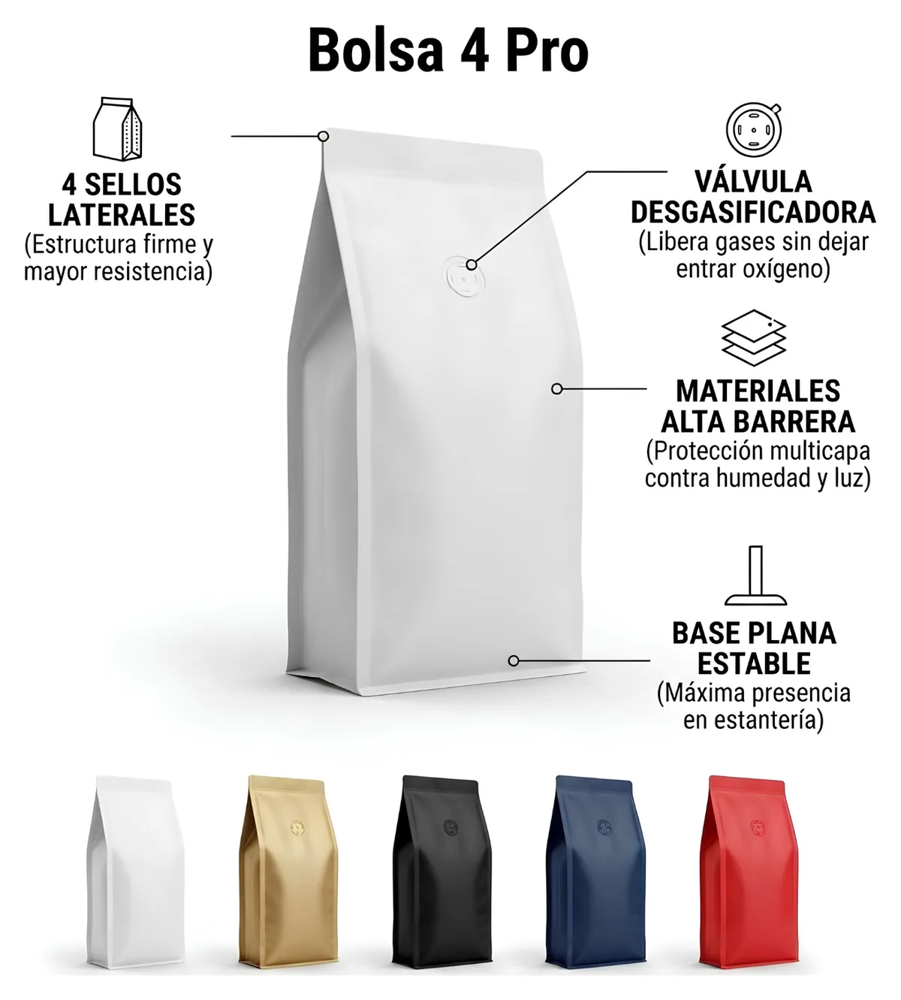
Fuelle cuádruple y base plana: máxima presencia en góndola para café de especialidad.
La genérica con etiqueta es la más económica; la serigrafía imprime tu logo en 1 o 2 tintas desde 100 unidades; la impresión digital ofrece full color y se recomienda desde 500 unidades.
| Criterio | Genérica + etiqueta | Serigrafía | Impresión digital |
|---|---|---|---|
| Pedido mínimo | Desde 100 uds | Desde 100 uds | Desde 500 uds |
| Colores de impresión | Los de tu etiqueta | 1 a 2 tintas planas | Full color y degradados |
| Costo por unidad | Precio de catálogo | Se cotiza | Se cotiza |
| Ideal para | Probar mercado y ferias | Marcas que arrancan | Marcas con varias referencias |
Mínimos de referencia; se confirman en la cotización.
Puedes elegir entre seis colores según el formato, sumar válvula desgasificadora (+$180 por bolsa) y personalizar con serigrafía o impresión digital, que se cotizan aparte. La Doy Pack ya incluye zipper.
Blanca, dorada, negra, azul, roja y kraft, según el formato.
Válvula unidireccional suiza o italiana para que el café respire sin perder aroma. Suma $180 por bolsa.
La Doy Pack ya viene con el zipper instalado, sin costo adicional.
Los precios del catálogo aplican a partir de 100 unidades por referencia.
Tu logo en 1 o 2 tintas sobre cualquiera de las bolsas. Se cotiza según tu diseño.
Arte a todo color y alta definición para marcas con varias referencias. Se cotiza según tu diseño y cantidad.
Nuestras bolsas sirven para café, té, especias y picantes, gomitas, suplementos, snacks y alimento para mascotas. Elige el formato y el color que mejor encaje con tu producto.
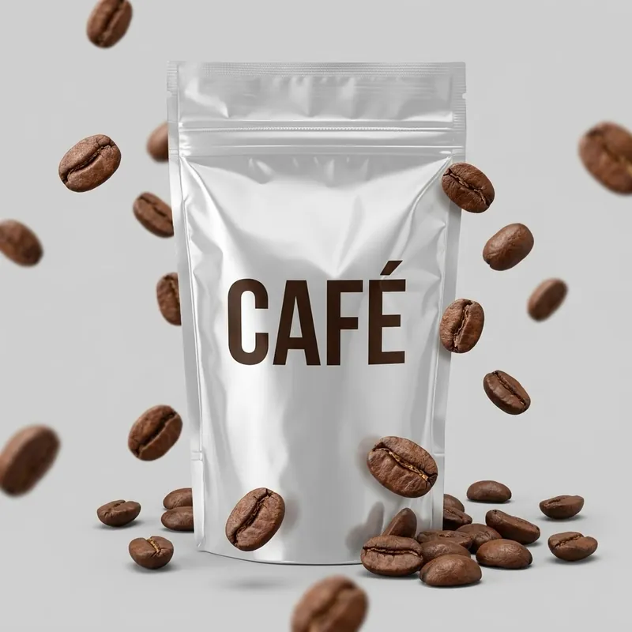
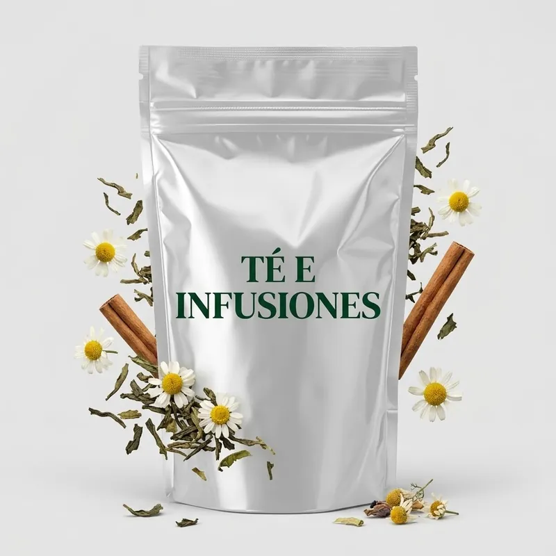
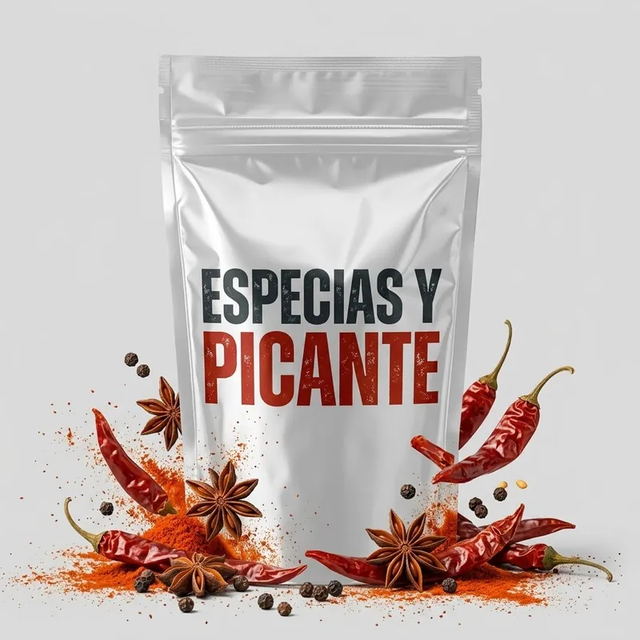
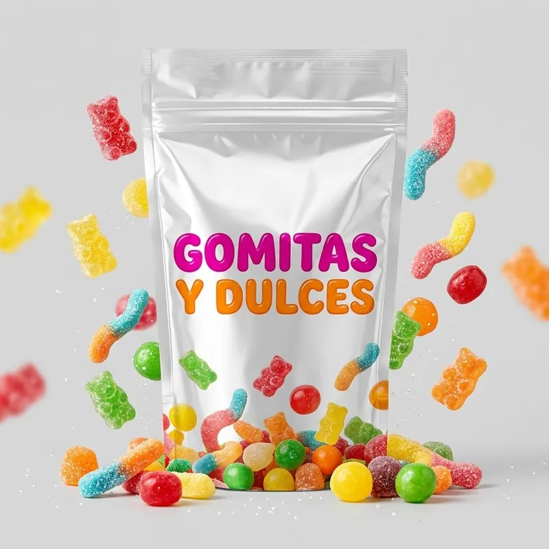
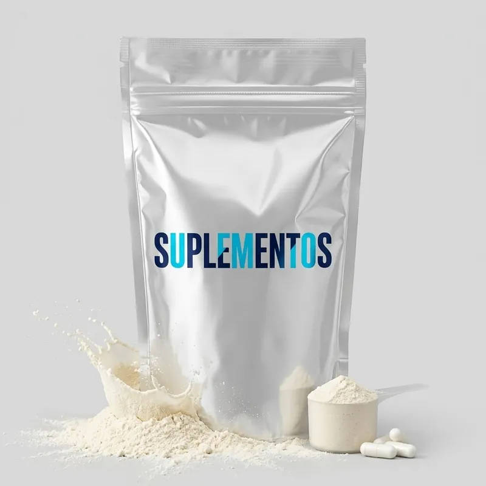
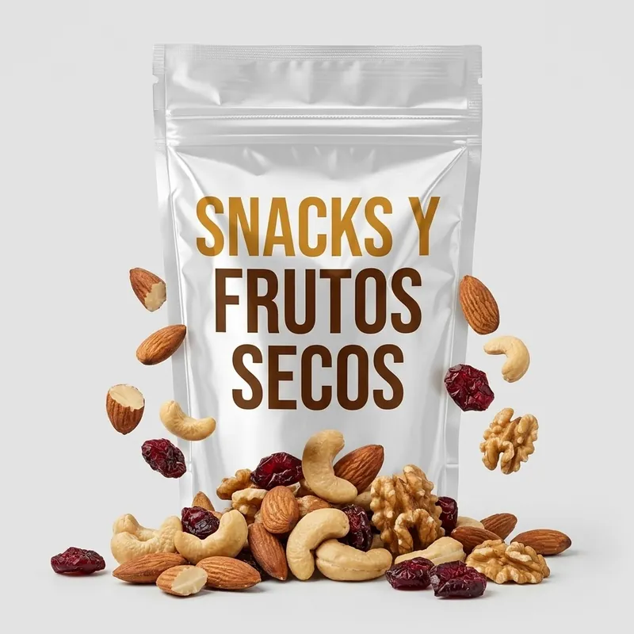
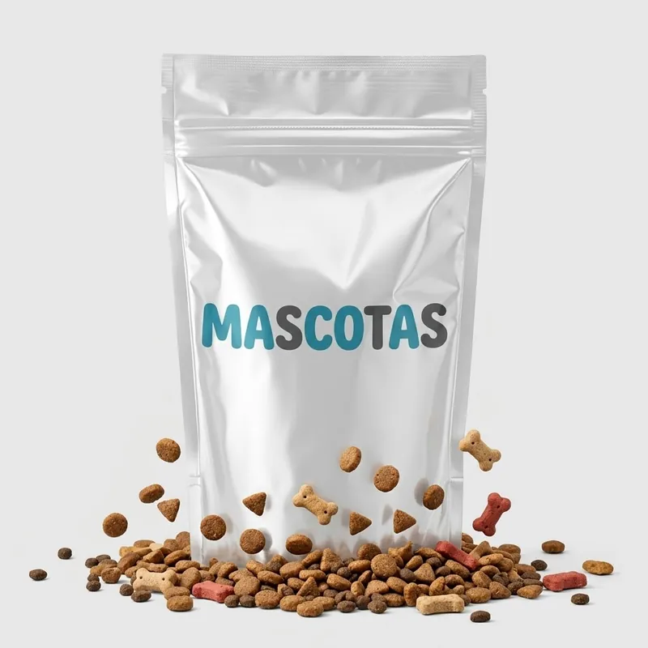
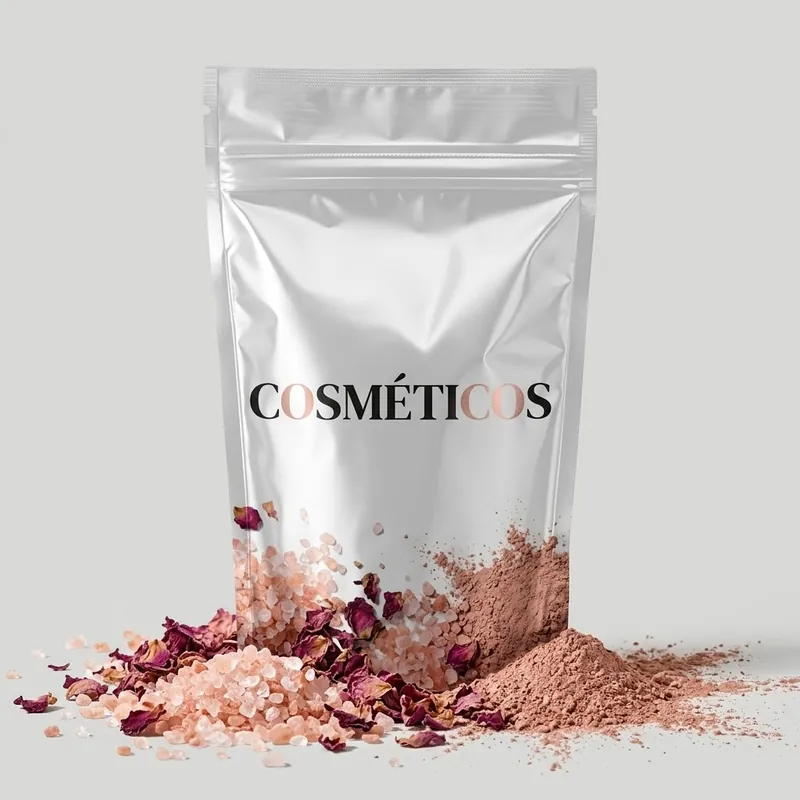
Eliges formato, color y aditamentos; nos envías tu diseño por WhatsApp y definimos serigrafía o impresión digital; producimos y despachamos a todo el país. Ya empacan con nosotros Mundo Picante y Gummies Vi King.
Escoge formato, tamaño, color y válvula y mira el precio por unidad al instante.
Mándanos tu logo o arte por WhatsApp y definimos si va en serigrafía o impresión digital y te la cotizamos.
Producimos y despachamos a toda Colombia por transportadora.
Respuestas directas antes de cotizar.
La 4PRO tiene fuelle cuádruple y base plana: se sostiene sola en el estante. La Flow Pack es una bolsa plana con sello de aleta, más económica, ideal para porciones y venta en volumen.
La 4PRO luce mejor en góndola y la Flow Pack rinde mejor en alto volumen. Ambas admiten válvula opcional.
La serigrafía arranca desde 100 unidades y la impresión digital se recomienda desde 500 unidades. Ambas se cotizan según tu diseño y cantidad.
Si tu volumen es menor, empieza con una bolsa genérica y etiqueta adhesiva mientras validas tu producto.
Deja salir el CO₂ que libera el café tostado sin permitir la entrada de oxígeno. La bolsa no se infla y el grano conserva aroma y frescura por más tiempo.
Es clave para café en grano o molido empacado pocos días después del tueste.
Es una bolsa stand-up con base inferior que le permite pararse sola. Se ofrece en 250 g y 500 g, con zipper resellable incluido y válvula opcional.
Conviene si buscas una presentación práctica y resellable, con el zipper ya instalado.
Flow Pack: blanca, dorada, negra, azul, roja y kraft. Doy Pack: blanca, dorada, negra y kraft. 4PRO: blanca, dorada, negra, azul y roja. Todas admiten válvula opcional (+$180 por bolsa); la Doy Pack ya incluye zipper resellable.
Todas se pueden personalizar con serigrafía o impresión digital.
Sí. Despachamos a todo el país por transportadora. Los tiempos dependen del producto y de la cantidad, y te los confirmamos al cotizar.
Te compartimos la guía de seguimiento por WhatsApp.
Dinos formato, color, tamaño y cantidad. Te respondemos por WhatsApp con el precio.
Cotizar por WhatsApp